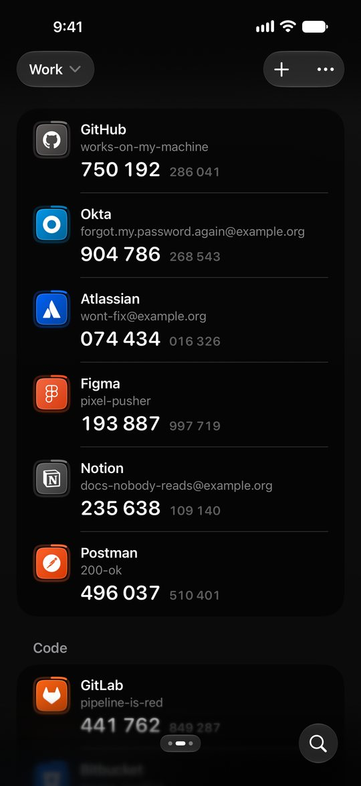

Every 2FA code in its place.
AuthSome is a free authenticator app for iPhone, iPad and Mac. It makes the 2FA codes websites ask for after your password, on your device, and keeps personal and work ones apart.
Sample Accounts
Try it. Choose a service, or change Personal to Work. The 2FA codes are samples.
What AuthSome Does
- Profiles
- Each service you add, such as Google, is an Account. Keep work Accounts in one Profile and personal ones in another, and see only the Profile you are in. Folders sort a Profile into sections.
- AutoFill
- When a sign in page asks for a 2FA code, AuthSome can fill it in. Confirm with Face ID or Touch ID. On a Mac, AuthSome can also sit in the menu bar, where a click copies a 2FA code.
- Backup and Sync
- Your Accounts are backed up to your own iCloud and kept in step across your devices. A new device gets them when you sign in to iCloud. Everything you add is end to end encrypted. Apple cannot read it and neither can we.
- Import and Export
- Bring your Accounts from Google Authenticator, 2FAS or Aegis, and see what was found before anything is added. Export your own password protected backup file.
- Lock
- Face ID, Touch ID or your passcode guards your 2FA codes, and the recovery codes you can keep with them, the backup codes a service gives you.
- Free and Private
- No ads, no purchases and no sign up. AuthSome collects nothing and runs no servers.
 Opens the full image.
Opens the full image. Opens the full image.
Opens the full image.


Opens the full image. Opens the full image.
Opens the full image.